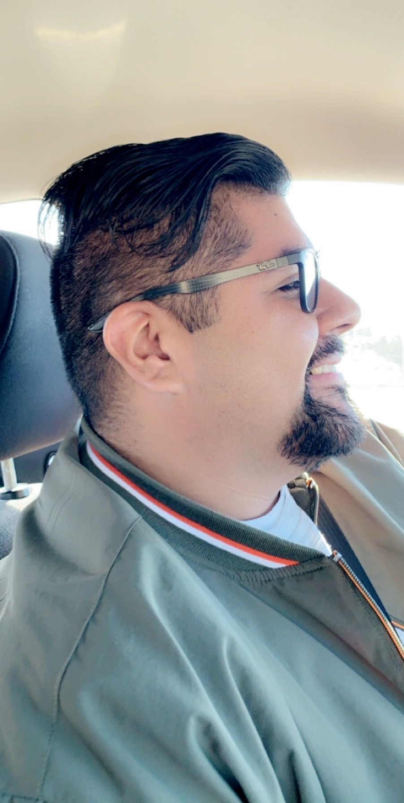

Fancy CSS 2
Big Idea
Working with a partner to styling our lab 16 with a fresh new look and making sure everything is centered and really formated from the privous labs.
Difficulties
We had a lot of difficulties with this lab in general. We spent a couple minutes styling our lab 16 and making sure everything if formated so it looks very organized.
Results
You are looking at my resutls. Its very interesting how after this lab 15 and when I look at lab 2 I have improved my coding and the way I organize my code. For this lab our whole web page looks different because of our new formating.